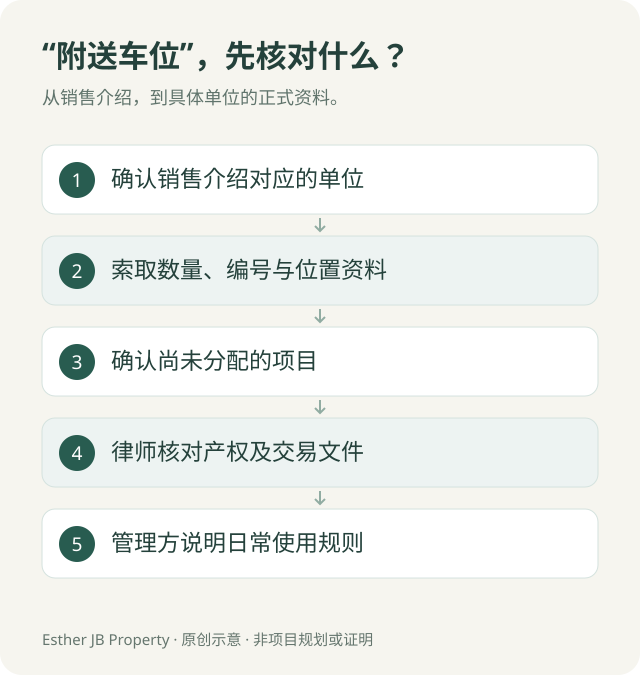

新山买家问答 · 资料核对：2026 年 10 月 18 日
公寓说“附送车位”，就是属于我吗？买家先问清楚这 5 个问题
简短答案：不能只凭“附送”两个字判断。买家应确认车位对应哪个单位、具体编号和位置，以及文件记载的产权或使用安排。

一、什么是附属地段（petak aksesori）？
JKPTG 的解释是，附属地段供相关分层单位业主专用，专用停车位是其中一个例子。是否适用于你正在购买的车位，要依据该交易的正式文件核对。JKPTG 官方说明：什么是附属地段？
二、销售图写两个车位，已经足够吗？
还应核对这份资料是否对应你的具体单位。请索取书面数量、位置或编号资料，并让律师确认交易文件如何记载车位安排。
三、车位还没分配，应该问什么？
问清楚预计什么时候确定、按什么方式安排，以及现阶段能够提供哪些书面说明。在正式确定之前，不把某个楼层或靠近电梯的位置当成已经包含。
四、能否把车位单独出售、出租或换位？
不能一概而论。产权安排、交易文件及适用管理规则需要分别核对；出售、出租和换位也是不同事项。先请律师或管理方按具体情况确认，再作决定。
五、访客停车可以当作家里的第二个车位吗？
不要这样规划。访客停车的使用资格、时段、收费和供应，需要按项目当时规则确认。若家里确实需要两个长期车位，就在筛选单位时直接提出。
读完后，可以阅读配套文章《新山买公寓，两个车位就够了吗？》，再比较停车是否适合自己的生活。
你可以先检查预填内容，再自行发送消息。
来源与更新
JKPTG 官方说明：什么是附属地段？：附属地段及专用停车位的定义。其余看房步骤是本文的实用检查建议，不是官方对任何项目的认定。
资料核对：2026 年 10 月 18 日。车位安排以具体单位的正式文件核对；涉及产权或交易条件，请由律师作个案审查。